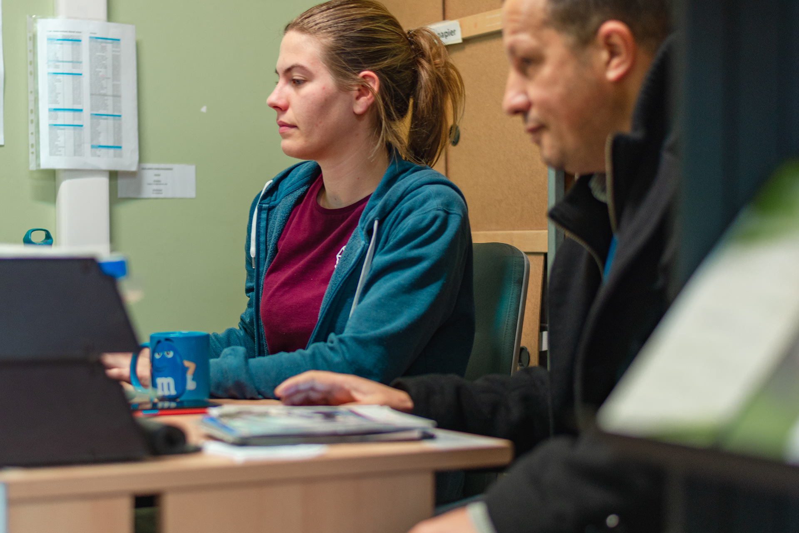
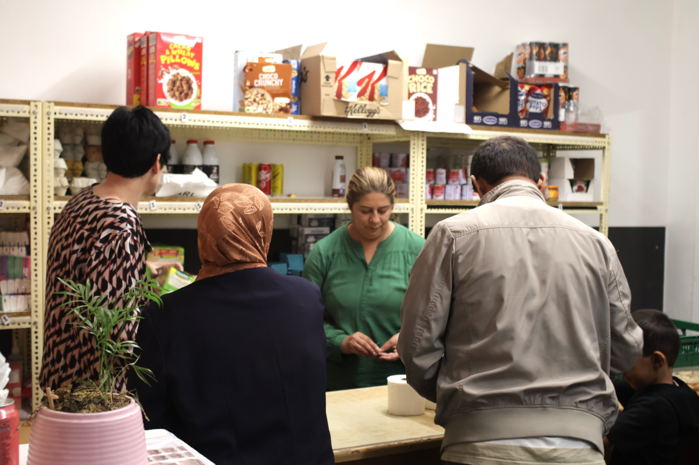
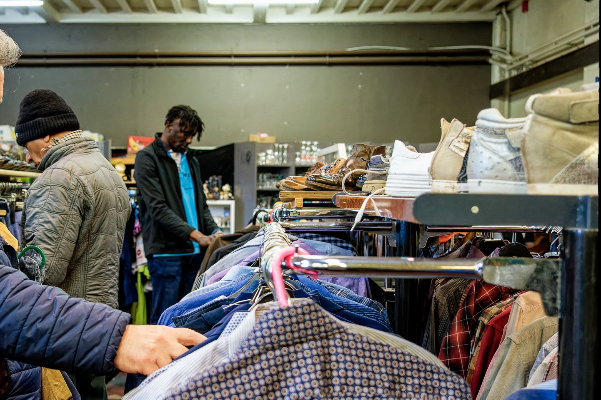
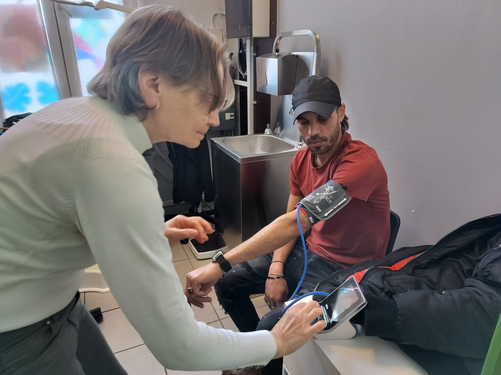

Wat heb je nodig?

Advies
Procedures, advocaat.
Neem zoveel mogelijk documenten mee, zodat we je goed kunnen helpen.

Eten
Je mag één keer per week naar onze kruidenier komen. Je mag kiezen: maandag, woensdag of vrijdag vanaf 13u.

Kledij
Op dinsdag en vrijdag is onze Bazar open van 13u30 tot 16u30.

Dokter nodig?
Dinsdag en donderdag vanaf 13u tot 16u kan je komen voor medisch advies en afspraken bij de dokter of ziekenhuis.
| Maandag | Dinsdag | Woensdag | Donderdag | Vrijdag |
|---|---|---|---|---|
| 9u-12u Procedures |
9u45-11u30 Nederlandse les 10u-12u Administratie |
9u-12u Procedures |
9u-12u Procedures |
|
| 13u-15u30 Kruidenier |
13u-16u Medisch 13u30-16u30 Bazar |
13u-15u30 Kruidenier |
13u-16u Medisch |
13u-15u30 Kruidenier 13u30-16u30 Bazar |
Wie mag bij VLOS komen?
VLOS wil jou helpen als je nergens anders terecht kan.
Ben jij?
- zonder wettig verblijfsstatuut
- in asielprocedure, maar zonder opvangcentrum
- in een Dublin-procedure
- ik weet het niet — doe de test
Dan ben je welkom in VLOS voor hulp en advies.